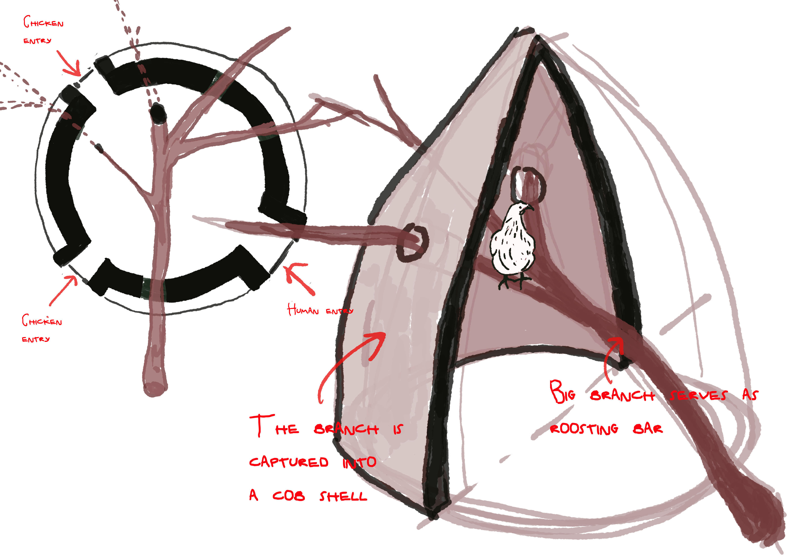
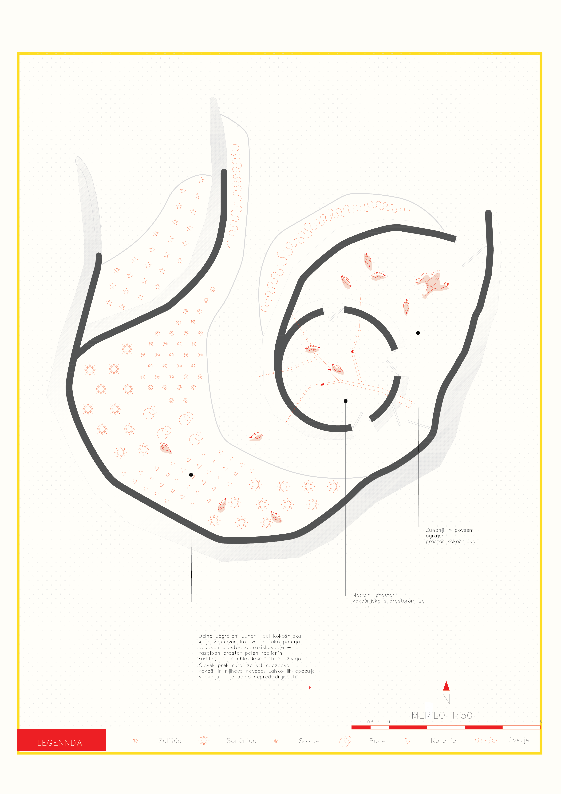
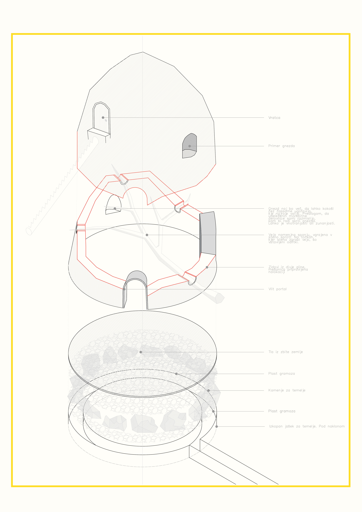
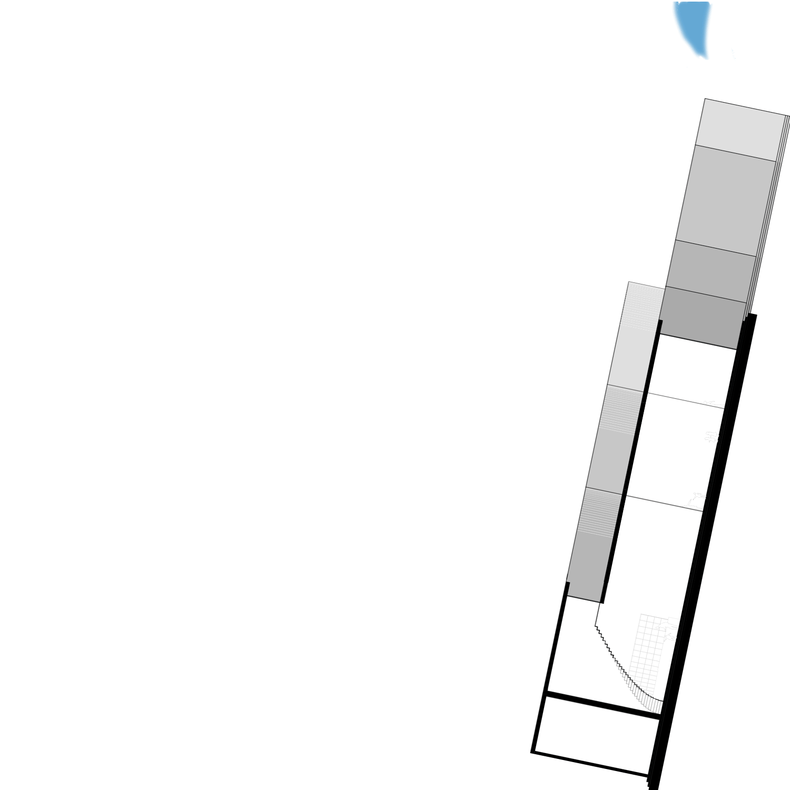
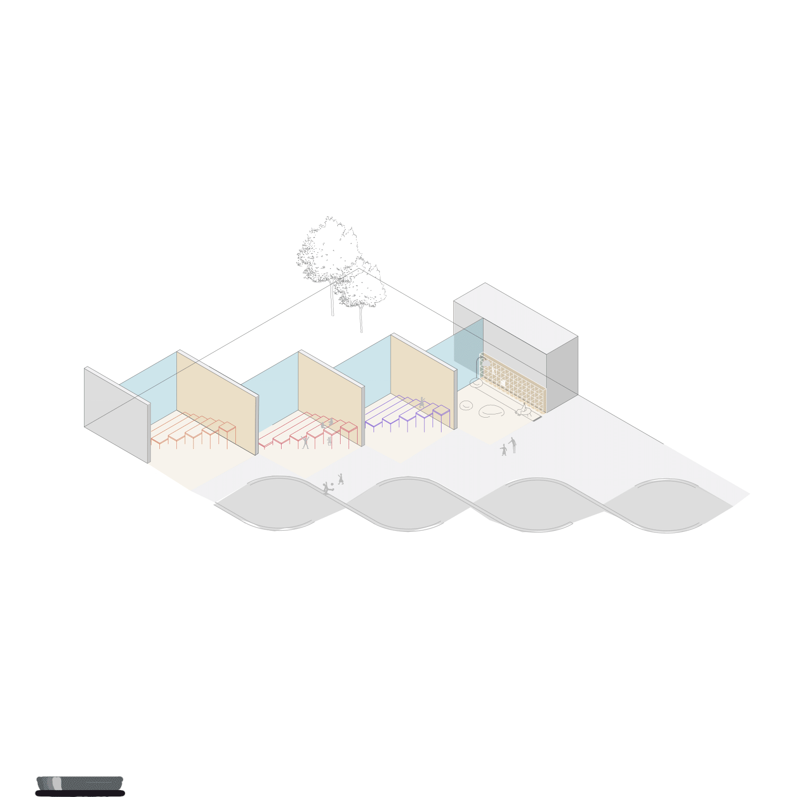
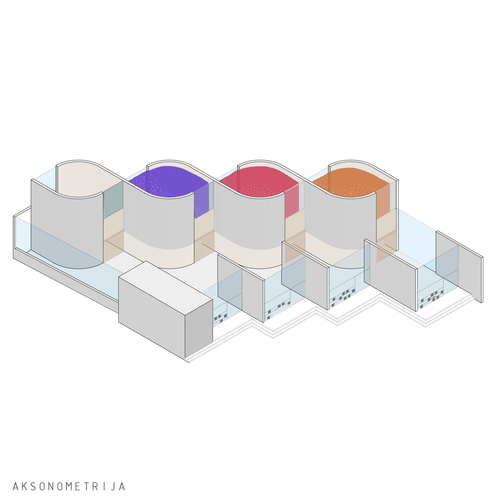

WAITING FOR THE STORM
Master's thesis project, Copenhagen 2025
This proposal envisions the transformation of an abandoned runway in Byholma, Sweden, into a weather station. Byholma became known in 2005 following storm Gudrun, when the runway was converted into a 2-kilometer temporary storage site for the enormous quantities of fallen timber that had to be immediately removed from the forest. The project is designed in two parts: living quarters for two meteorologists at the southern end of the runway, and a weather station at the northern end, equipped with the infrastructure needed to measure weather conditions and archive the collected data. The meteorologists' daily task is to walk the full 2 km three times a day in order to record their measurements. The transformation reflects humanity's obsession with measuring and rationalizing the world, through which we seek to understand the things that frighten us — extreme weather phenomena, for example. "Enlightened" humans believe they don't need to change their way of life, because they understand the danger approaching them. They master nature by understanding it. But is that really so? Are we prepared for what is coming? And is our inadequate fear leading us straight into a climate catastrophe?
.jpg)
.jpg)
.jpg)
.jpg)
.jpg)
.jpg)
CHICKEN COOP
Competition submition for Outsider magasine competition, Ljubljana 2026
The Anthropocene is an era from which there is no simple way back. Through industrialization, humanity has such a strong grip on the environment that radically halting it would mean a fatal end for numerous human and non-human communities. Within this complex and manifold reality, the key question for me seems to be how I position myself as an architect. I work with technology that most literally separates humans from the environment and represents the pride and symbol of enlightened humanity, while at the same time it is supposed to serve life, which is by its nature unpredictable and mysterious. It is precisely the dynamic between the anticipated and the random, between the specific and the universal, that seems to me to be the one that must guide my architectural practice in the Anthropocene. When creating for non-humans, it seems essential to me to start from the recognition that we are fundamentally different from one another, and that we can never truly know what a chicken's life is like. This does not mean, however, that creating for them is not meaningful or important. Quite the opposite: it means that such creation must be more cautious, less self-assured, and less focused on our own projections. This tension already shows itself in the competition brief itself. Even though it is written from the chicken's point of view, its requirements follow traditional competition language that glorifies modernity, rationality, logic, and deliberate construction. These are values we can reasonably doubt have any meaning whatsoever for a chicken. It seems important to me to acknowledge the fact that we can never truly know what a chicken wants. What we can do, however, is create architecture that allows humans to better get to know chickens: an architecture in which humans learn rather than explain, in which a chicken can come into contact with other non-human species, and in which life is not abstracted into a small, modernist henhouse. Instead, such architecture would allow life to become richer, allowing chance, discomfort, and unpredictability to enter it — qualities that are essentially closer to life than complete control.





STRANGE HOUSE
Studio project, Ljubljana 2020
In my second year of studio, I designed a hybrid space that combined artist studios with a kindergarten. I explored the contrasts between introverted and extroverted spaces, the relationships between private and public areas, and how these spatial qualities come together. I also devoted significant time to developing the presentation of my drawings, using animation as the primary medium.


